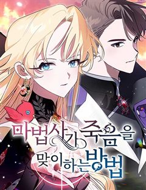
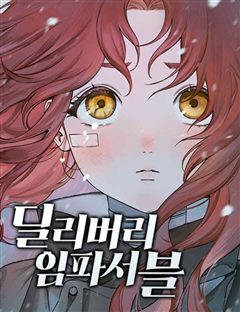
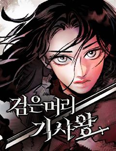
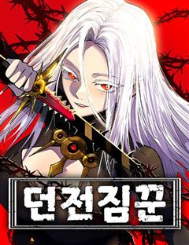

66666년 만에 환생한 흑마법사 같은 웹툰 추천

66666년 만에 환생한 흑마법사 · 모도 / 박지헌 / 백세 / 화봉
66666년 만에 환생한 흑마법사 재밌게 봤다면 이 웹툰들도 좋아할 거예요. 같은 장르이면서 신화, 중세판타지액션, 다크판타지 같은 요소가 겹치는 작품을, 겹치는 요소가 많은 순서로 20개 골랐어요.
2026-10-06 기준 · 네이버웹툰·카카오웹툰·레진코믹스 · 성인 작품 제외
내 취향으로 직접 골라 추천받기 →-
1
 네이버웹툰
네이버웹툰나태한 마왕은 신과 싸우기로 결심한다.
갑작스레 인간들의 성 '소돔'에 강림한 신들. 소돔 반대편에 있는 마왕을 데려오라는 말에 함께 인간들을 학살하기 시작한다. 지옥도가 펼쳐진 상황에서 몰래 성을 뛰쳐나온 한 명의 기사는 마왕을 데리러 가게 된다. 2024년 4월 독자 PICK 선정작!
중세판타지액션다크판타지마법서양판타지액션네이버웹툰에서 보기 → -
2
 네이버웹툰
네이버웹툰불로불사로 산다는 것은
공교회의 사제 로베르타는 북쪽 끝에 있는 벽지, 디트마르셴의 주임 사제로 발령받는다. 전임자가 실종된 사건이 벌어진 직후 주어진 자리이기에, 로베르타는 경계를 품고 디트마르셴 공작 ‘울리히’에 관해 알아간다. 소문에 의하면 그는 300년 이상 영주로…
신화중세판타지액션마법먼치킨판타지액션네이버웹툰에서 보기 → -
3
 네이버웹툰
네이버웹툰새끼부터 시작하는 악마생활
소설 [인마록] 속, 천사와 악마의 끊임없는 전쟁터인 세계. 세상의 균형이 위태롭게 흔들리는 시대, 인간이 낳은 반인반마로 환생한 요한은 튀어나오는 악마의 본능을 때로는 억누르며, 때로는 이용하며. 소설 속 인물들을 이용해 악인을 처단해야 한다. 악…
중세판타지액션다크판타지마법환생판타지액션네이버웹툰에서 보기 → -
4

네이버웹툰마법사가 죽음을 맞이하는 방법
“이제 끝내고 싶어.” 사악한 드래곤을 없애야 죽을 수 있다는 저주로 인해, 300년이라는 긴 시간을 살아온 대마법사 엔테. 마침내 드래곤을 물리치고 안식을 맞이했으나 눈을 뜬 곳은 사후세계가 아닌, 휘황찬란한 귀족 저택이었다. 더군다나 마법이라곤…
중세판타지액션마법서양먼치킨판타지액션네이버웹툰에서 보기 → -
5
 네이버웹툰
네이버웹툰멸망한 가문의 회귀자
후회로만 가득한 생. 스스로의 잘못을 깨닫고 다시 사람이 되고자 했을 때, 이미 가문은 불타 사라진 뒤였다. 발악 같은 분노로 하루하루 연명하던 삶. 그 절망의 끝에서, 간절한 염원이 하늘에 닿았다. 용서받지 못한 자. 운명을 거슬러 검을 들다.
중세판타지액션서양먼치킨성장물판타지액션네이버웹툰에서 보기 → -
6
 네이버웹툰
네이버웹툰용사참수인
사형집행인으로 용사를 참수하고 은퇴하여 자유인이 된 데닐 패트릭은 한적한 산골에서 무료한 나날을 보낸다. 그러던 어느 날 난데없이 딸이라고 찾아온 아이의 등장에 데닐 패트릭의 인생은 산골을 벗어나 전 대륙을 향하게 되는데...
중세판타지액션마법서양판타지액션네이버웹툰에서 보기 → -
7
 네이버웹툰
네이버웹툰쿠베라
신의 이름을 가진 소녀 쿠베라 리즈. 15세 생일에 외출에서 돌아오다가 초토화되어버린 마을을 목격하게 되는데..! 신, 수라, 마법사들 사이에서 펼쳐지는 소속불명 장르 혼합 판타지.
신화다크판타지마법판타지네이버웹툰에서 보기 → · 쿠베라 같은 웹툰 → -
8
 네이버웹툰
네이버웹툰카루나
돈과 과학이 교리인 집단 ‘뱅크’. 그들의 시설에서 자란 라만은 평생 잡역부로 살다 죽을 운명이었다. 그러던 어느 날, 악마와 얽힌 사건 속에서 뱅크가 철저히 부정해 온 ‘신의 힘’ 아스트라를 각성한다. 하루아침에 운명이 뒤집힌 라만은 악마를 사냥하…
신화마법성장물판타지액션네이버웹툰에서 보기 → -
9

네이버웹툰딜리버리 임파서블
"라비, 할 수 있지? 널 믿는다." 영원한 겨울 아래 눈으로 뒤덮인 세상. 빈민가에서 마약을 팔며 살아가는 소녀 라비는, 동경하는 배달부 헤더의 뜻을 이어 희망의 장소 '북쪽 도시'로 배달을 시작한다. 그런데 사실, 그녀가 배달하려던 것은... 춥…
중세판타지액션마법성장물판타지액션네이버웹툰에서 보기 → -
10
 네이버웹툰
네이버웹툰별을 품은 소드마스터
기사를 동경하는 슬럼가의 부랑아 블라드. 검은 벼락을 맞는 사고 이후부터 들리기 시작한 누군가의 목소리와, 어느 날 갑자기 등장한 푸른 달빛의 기사가 블라드의 세계를 산산조각내면서 뒷골목 소년의 삶이 송두리째 변하기 시작하는데... 높디높은 밤하늘에…
중세판타지액션서양성장물판타지액션네이버웹툰에서 보기 → · 별을 품은 소드마스터 같은 웹툰 → -
11
 네이버웹툰
네이버웹툰나태 공자, 노력 천재 되다
잠을 도피처로 삼아 온 소년 아이른 파레이라. 사람들은 그를 나태 공자라 부르며 조롱했지만 그는 변할 생각이 없었다. 어느 날 어느 검사의 꿈을 꾸기 전까지는... 그것은 그저 묵묵히 수십 년간 검을 휘두르며 단련하는 한 재능 없는 사내에 관한 꿈이…
중세판타지액션서양성장물판타지액션네이버웹툰에서 보기 → · 나태 공자, 노력 천재 되다 같은 웹툰 → -
12
 네이버웹툰
네이버웹툰보이드맨
신들이 지배하는 포스트 아포칼립스. 가족을 앗아간 신을 죽이기 위해, 난 죽음으로 들어갔다. “공허여, 내게 힘을 빌려줘. 신을 죽일 수 있는 힘을...!”
신화먼치킨성장물판타지액션네이버웹툰에서 보기 → -
13
 네이버웹툰
네이버웹툰마탑의 문제아들
백탑의 마탑주 오스카 세이지와 백탑의 마법사들. 인류의 미래를 위해 목숨을 비롯한 모든 것을 바쳤다. 그로부터 20년 후. 오스카 세이지가 다시 눈을 떴을 때, 창문에 비친 건 기초 마법밖에 쓰지 못하는 1레벨 마법사. 그리고 4대 마탑 퇴출 위기를…
마법환생성장물판타지액션네이버웹툰에서 보기 → -
14
 네이버웹툰
네이버웹툰용사보다 너무 강해서 힘을 숨김
어릴 적부터 만화 속에 나오는 주인공보다 평소에는 가벼워 보이지만 사실 누구보다 강한 '힘을 숨긴 캐릭터'가 멋있었다 그리고 찾아온 전생의 기회! "새로운 세상에서 무엇이 되고 싶나요?" "힘숨찐이 되고 싶어!" ...내가 바란 힘숨찐은 이런 게 아…
신화마법먼치킨판타지액션네이버웹툰에서 보기 → -
15

네이버웹툰검은머리 기사왕
오크와 엘프 사이, 멸종의 길에 선 인간. 인간의 시대는 끝난 줄 알았다. 다음 왕을 육성하라는 사명을 받은 기사왕의 종자로서 검은머리 소녀를 만나기 전까지는. 그는 인간의 시대를 되찾기 위해, 마지막으로 검을 든다. 검은머리 소녀를 왕으로 만들기…
중세판타지액션다크판타지판타지액션네이버웹툰에서 보기 → -
16

네이버웹툰던전짐꾼
타고난 재능을 가진 자들만이 던전을 토벌하는 모험가가 될 수 있는 세계. 세상은 '나기'를 모험가가 될 수 없는 짐꾼으로 규정했다. 하지만 던전을 클리어 하면 그게 모험가잖아? 전투 스킬 0! 생존 능력 만렙! 운명을 거스르는 만능 짐꾼 나기의 던전…
중세판타지액션마법판타지액션네이버웹툰에서 보기 → -
17
 네이버웹툰
네이버웹툰로도스도 전기 : 사령의 여왕
카스툴의 피를 이은 사령술사 넥트렐라. 그의 손에 붙잡힌 연인을 되찾기 위해, 광전사 테인은 목숨을 건 싸움에 뛰어든다.
다크판타지마법판타지액션네이버웹툰에서 보기 → -
18
 네이버웹툰
네이버웹툰해피 페이스
투기장에서 노예로 자란 해피는 괴물 같은 실력으로 생존해왔다. 투기장 주인이 사형되는 사건이 생기며 해방된 해피는 새로운 가족과 친구들을 만나며 조금씩 사회를 배워간다. 하지만 세상은 해피에게 싸움을 멈출 기회를 주지 않았다. 자신의 신분, 범죄와의…
중세판타지액션서양먼치킨판타지액션네이버웹툰에서 보기 → -
19
 네이버웹툰
네이버웹툰황제의 검
정난의 변에서 간신히 살아난 주윤문, 마교 천하제일 천마(天魔)와 소림사 육조 혜능(慧能)을 몸 안에 받아 천마서생 '파천'으로 재탄생하게 되는데… 절대지존을 향한 파천의 새로운 이야기가 시작된다!
신화서양먼치킨성장물액션네이버웹툰에서 보기 → -
20
 네이버웹툰
네이버웹툰염라강림
지옥이 망했다. 피가 흘러야 할 황천에는 맑은 물이 흐르고 망자들을 끓이던 솥은 차갑게 식은지 오래다. 은퇴한 염라대왕은 자신의 행복을 위해 윤회의 길을 택하고자 하지만, 혼란스러워진 지옥과 사라진 자신의 후임 털보로 인해 윤회의 길을 걸을 수 없게…
신화먼치킨판타지액션네이버웹툰에서 보기 →